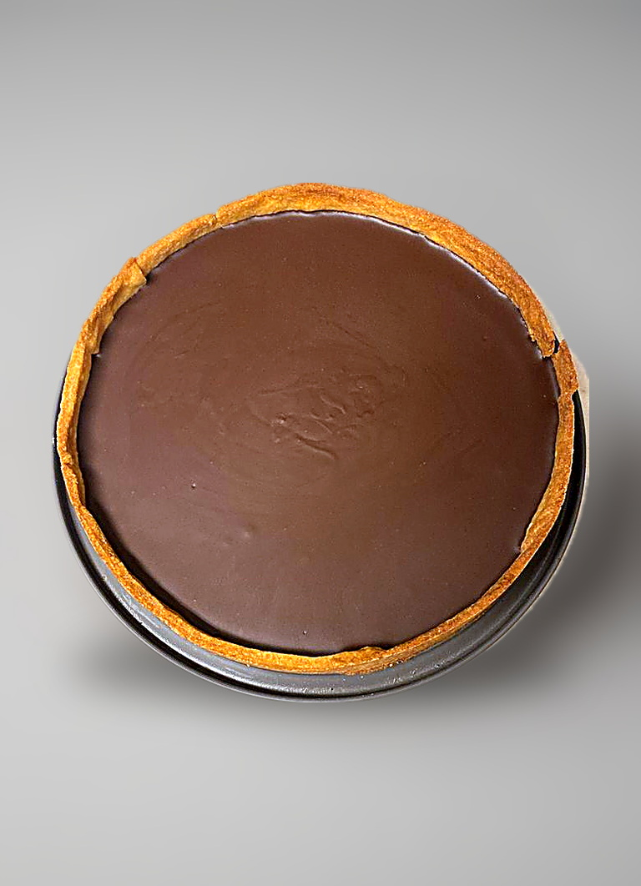

Baking / Tarts / Dish
Chocolate Tart

- Dough
- Pate Sucree, Chocolate Cacao Method
- Filling
- Ganache de Miel y Ron
- Yield
- 1 x 18 cm tart
- Unit Weight
- 150 g
- Rest
- 8 h for the dough, 1 h lined, then chill to set the ganache
- Oven
- 160C for 35 min, then 140C for 5 min
- Price
- $6
- Tags
- vegetarian
- Source
- Chocolate Cacao, youtube.com/@chocolate_cacao
- Energy Cost
- $2.41 (40 min bake plus 30 min, 3.5 kW at 59 cents/kWh)
Ingredients
Batch
- Cocoa glaze — granulated sugar: 50 g
- Cocoa glaze — cocoa powder: 20 g
- Cocoa glaze — water: 35 ml
- Cocoa glaze — heavy cream, 45%: 30 g
- Cocoa glaze — gelatin sheet: 3 g
Method
- Make and blind bake the shell, including the egg-yolk seal. See the dough.
- Make the ganache and pour it into the cooled shell. See the filling.
- Glaze: soak the gelatin sheet in water.
- Whisk the cocoa powder into the sugar in a bowl.
- Heat the water and cream in a pan.
- Once it boils, whisk in the cocoa and sugar, then bring back to the boil.
- Off the heat, squeeze the gelatin out and stir it in.
- Pour over the set ganache and chill.
Notes
- Three separate preparations: shell, ganache, glaze. The shell needs an 8 hour rest, so this is a two-day tart.
- The ingredient list here covers the glaze only. Shell and ganache quantities live on their own pages.
- Glaze is 50 g sugar to 20 g cocoa with just 35 ml water and 30 g cream, so it is a thin mirror layer rather than a thick topping.
- Gelatin goes in after the second boil, off the heat. Boiling gelatin weakens the set.
- The earlier entry for this tart carried the bakery-site quantities (200 g flour, 150 g butter, 200 g dark chocolate, 150 ml cream, 3 eggs, 100 g sugar), a different and much larger recipe with dark chocolate and no glaze. Those have been replaced.
Learnings
Not made yet.